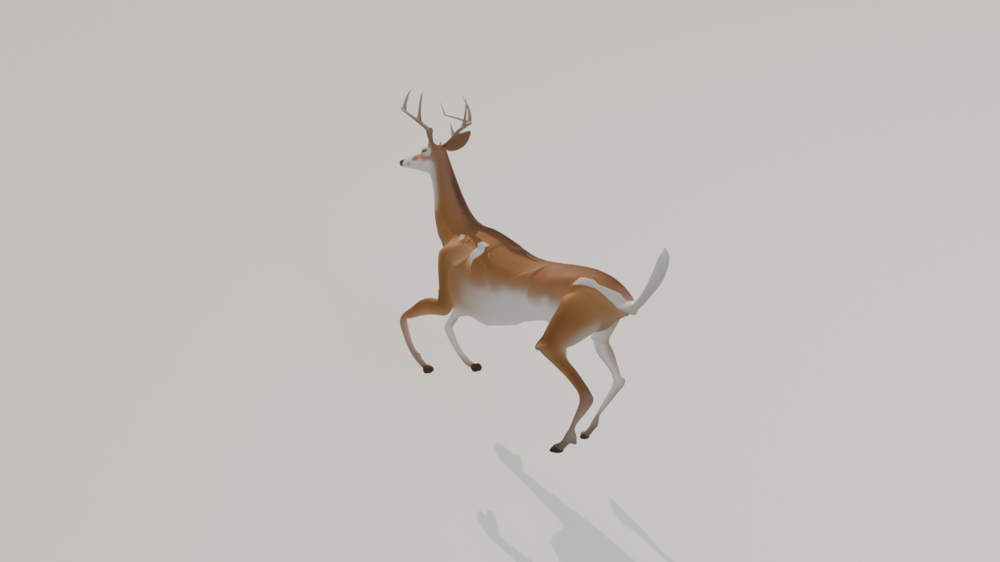
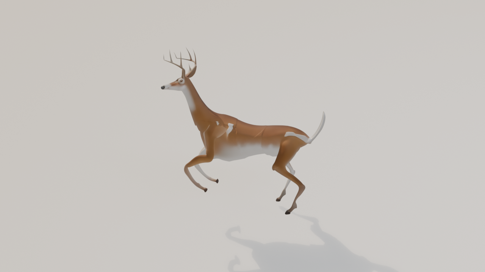

CC—25 · Improvement archive
Improvement,
with receipts.
Fawn Deer Motion · 小鹿
Verified iteration
Starting point
The starting point was an existing Blender asset: 49,714 vertices, 14 bones, 65 frames at 24fps, a 50mm camera and original animation. This project refined that asset; it did not remodel the deer or claim a new gait.
Evidence standard: Source snapshots, technical logs and/or measurable checks


Orientation, light direction, short-fur shading and shadow settings were refined while preserving the original asset and animation.
Refinement sequence
What changed
6 documented implementation or specification improvements.
- 01
Asset integrity and portability
The original mesh, rig and action were preserved without retopology. Three external textures were packed into the final Blender file and verified after reopening.
- 02
Orientation and camera alignment
Whole-model yaw and pitch were aligned to zero while retaining the 50mm lens and original camera translation.
- 03
Systematic light search
Thirty key-light directions and five sun angles were evaluated on frame 13. The selected (0.35, 0.4, -0.8) direction and 0.12rad sun angle brought shadow direction and length closer to the reference.
- 04
Short-fur material refinement
Scale-220 fine noise, Bump strength 0.12 at distance 0.002, Sheen 0.06 and Specular 0.45 created a restrained short-fur surface without a plastic highlight.
- 05
Occlusion, shadows and anti-aliasing
GTAO was enabled at distance 0.35 and quality 1.0. EEVEE samples increased from 64 to 256, shadow rays from 1 to 4 and shadow steps from 6 to 8.
- 06
Honest motion presentation
The original 16-frame gait and camera motion were retained. Because the direct loop seam was visible, the deliverables became a 65-frame source-length cut and a 16-second motion-compensated slow-motion cut instead of a claimed seamless loop.
Evidence boundary
The 0–1 pixel result refers only to bounding-box edges on five representative frames, not complete visual equivalence. The 16-second cut uses bidirectional motion-compensated interpolation, not 384 newly rendered frames or a newly authored 16-second gait. The public reference is not a controlled regeneration comparison.